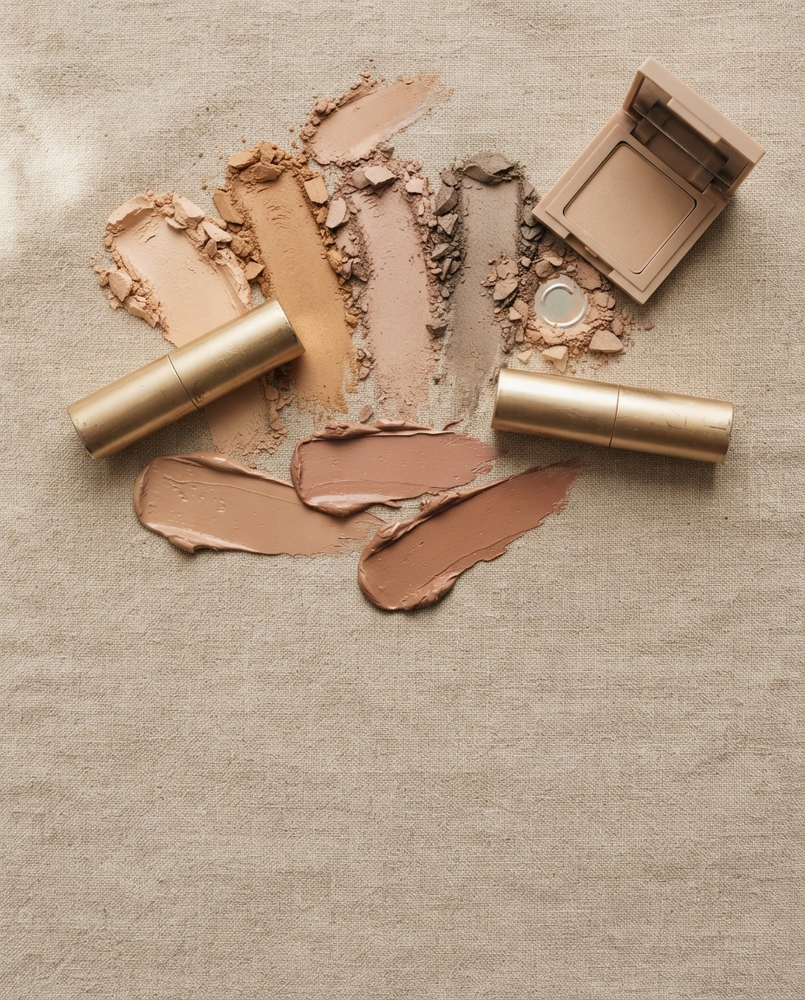

같은 베이지도 톤에 따라 달라 보여요.칙칙하지 않게 고르는 법을 담았어요.
완전 누드 베이지보다 핑크나 코랄이 살짝 섞인 베이지가 얼굴을 밝혀줘요.
매트 베이지만 쓰면 밋밋해요. 눈두덩 중앙에 펄 한 겹이면 충분해요.
베이지 메이크업일수록 혈색 치크를 얇게 깔아야 생기가 살아요.
베이지 립을 바를 땐 입술 안쪽에만 혈색 틴트를 콕.같은 베이지도 훨씬 생기 있어 보여요.
저장해두고 쇼핑할 때 꺼내보세요